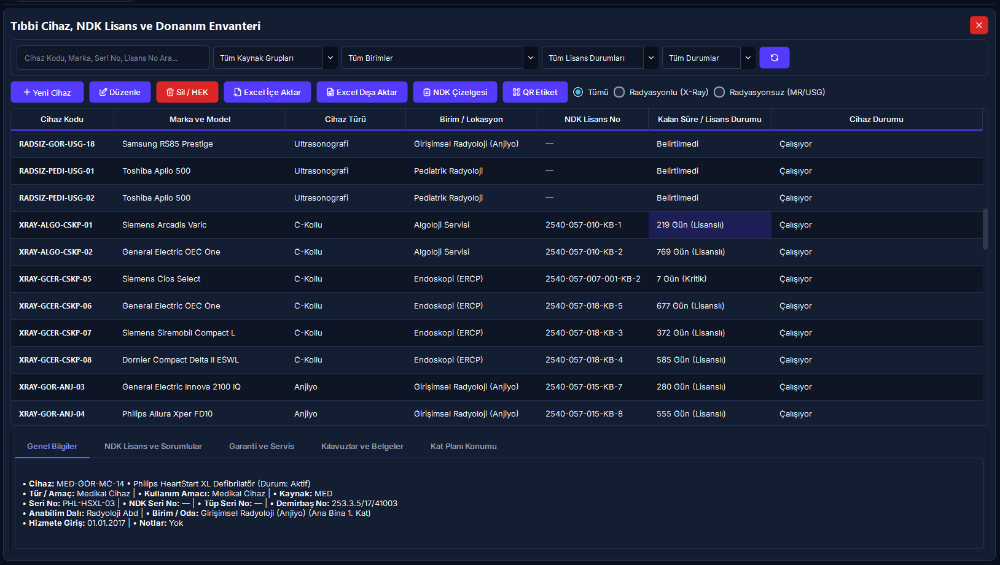
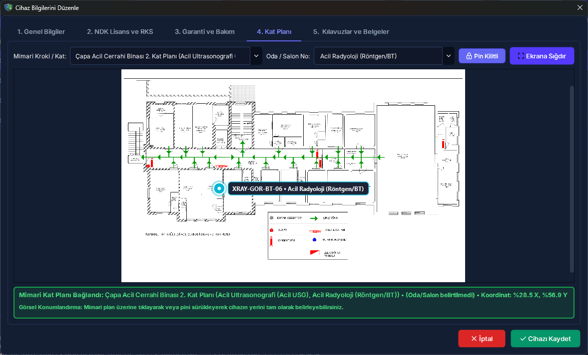

Tıbbi Cihaz ve NDK Lisans Envanteri
Hastaneler ve radyoloji merkezlerindeki iyonlaştırıcı radyasyon yayan (X-Ray, Tomografi, Anjiyografi, Skopi, Mamografi) ve radyasyonsuz medikal (MR, USG) tüm cihazların teknik künyelerinin yönetildiği, Nükleer Düzenleme Kurumu (NDK) lisans ve vize sürelerinin 6 ay - 45 gün - 30 gün kademeli erken uyarı sistemiyle takip edildiği, cihazların mimari kat planları (kroki) üzerine koordinatla sabitlendiği, teknik kılavuzların AES-256 şifreli Evrak Kasasında korunduğu ve hurdaya ayrılan cihazların resmi HEK tutanağıyla arşivlendiği entegre donanım yönetim merkezidir.
Cihazın resmi NDK lisansıyla envantere kaydedilmesi, erken uyarı alarmına bağlanması ve QR künyesinin üretilmesi.
[Yeni Cihaz] butonuna tıklayın. 1. Sekmede Birim ve Türü seçin; Seri No ve Demirbaş No girin. 2. Sekmede NDK Lisans No ve Vize Tarihini yazıp [Cihazı Kaydet] butonuna basın.
Cihaz Kodu otomatik üretilir ve kilitlenir. Vize bitimine 6 ay kala erken uyarı başlar; 45 gün ve 30 gün eşiklerinde alarm rengi değişir. Hiçbir eski veri ezilmez.
5N1K Kural ve Ayar Çözümleme Tablosu
Tıbbi cihaz envanteri, NDK lisanslama, kat planı sabitleme ve HEK hurda arşivi operasyonel kontrolleri.
Cihaz Yaşam Döngüsü ve İş Akış Şeması (Mermaid)
Aşağıdaki şema, tıbbi cihazın sisteme ilk kaydından otomatik kodlamaya, NDK vize erken uyarı alarmlarından HEK hurda arşivine kadar tüm yaşam döngüsünü göstermektedir.
Ekran Konumları ve Görsel Rehber


Adım Adım Operasyonel Eylem Akışı
XRAY-ACL-ANJ-01) üretir. Seri No ve kurum Demirbaş No alanlarını doldurun.
Hibrit Platform Matrisi (Masaüstü vs Web Portal)
Masaüstü Uygulaması (Yetkili Yönetim Merkezi)
- • Yeni cihaz kaydı, teknik künye ve kilitli akıllı kod üretimi.
- • NDK lisanslama, vize süresi ve RKS/Birim sorumlusu atamaları.
- • Mimari kat planı krokisi üzerinde pin sabitleme ve kilitleme.
- • AES-256 şifreli evrak kasasına teknik kılavuz yükleme ve indirme.
- • Excel toplu içe/dışa aktarım ve resmi Word (.docx) HEK Hurda Tutanağı.
Web Portalı & Mobil Barkod (Saha Personeli Görünümü)
- • Kamera ile cihaz QR barkodunu tarayarak cihaz künyesini sahada açma.
- • Cihazın son Kalite Kontrol (QC) onay ve geçerlilik durumunu teyit etme.
- • Sahadan arıza bildirimi oluşturma ve arıza sayısını izleme.
- • Ortam Dozu Kroki Haritasında sabit cihazların oda yerleşimini izleme.
Sıkça Sorulan Sorular ve Saha Çözümleri
NDK lisans vize sürelerinde erken uyarı alarmları ne zaman devreye girer?
RADPYS V4, NDK lisans geçerliliğini 4 renkli rozet sistemiyle izler: Vize süresine 60 günden fazla varsa Yeşil (Güvende); kalan süre 16 - 60 gün arasında ise "Süresi Yaklaşıyor" sarı uyarısı verilir. Kalan süre 0 - 15 gün arasına indiğinde acil resmi başvuru gerektiren Turuncu alarm devreye girer. Süresi dolan (kalan gün < 0) cihazlar ise Kırmızı renkle işaretlenerek yönetici ve RKS ekranında gösterilir. Lisans zorunluluğu olmayan MR ve USG gibi cihazlar ise Gri rozetle muaf tutulur.
Cihaz kodunu neden kendimiz serbestçe belirleyemiyoruz?
RADPYS V4, cihazları arıza, kalite kontrol, dozimetre maruziyeti ve kroki sistemlerine bağlarken benzersiz ve standart bir format (XRAY-ACL-ANJ-01 gibi) kullanır. Kodun elle düzenlenmesi mükerrer kayıtlara ve ilişkisel veri kopmalarına yol açabileceğinden kilitlenmiştir. Kurum içi demirbaş veya Sağlık Bakanlığı ÇKYS takibi için formdaki Demirbaş No alanı kullanılır.
Yeni bir X-Ray cihazı tanımlarken NDK Lisans Numarası girmek şart mıdır?
Evet. Mevzuat gereği iyonlaştırıcı radyasyon yayan cihazların sisteme ruhsatsız kaydedilmesine izin verilmez. Ancak cihaz yeni kurulmuş ve ruhsat süreci devam ediyorsa Lisans Durumu kutusundan "Lisans Başvuru Aşamasında" seçeneği işaretlenerek yasal süreç kayıt altına alınabilir. MR ve USG gibi radyasyonsuz cihazlarda ise lisans şartı aranmaz.
Yanlışlıkla [Sil / HEK] butonuna basılan bir cihaz nasıl kurtarılır?
Sistem cihazları fiziksel olarak silmediği için hiçbir veri kaybolmaz. Üst menüden HEK ve Hizmet Dışı Cihaz Arşivi ekranını açın. Listeden ilgili cihazı seçip [Tekrar Aktif Statüsüne Al] butonuna tıklayın. Cihaz anında tüm geçmiş kayıtlarıyla birlikte ana aktif envanter tablosuna geri döner.
Mobil ve seyyar röntgen cihazlarına kroki pini koymak zorunlu mudur?
Hayır. Mobil/seyyar cihazlar acil, ameliyathane veya yoğun bakım gibi farklı birimlerde sürekli yer değiştirdiği için kat planına sabit pin yerleştirilmesi opsiyoneldir. Sabit X-Ray, BT ve Anjiyo cihazlarında ise mimari zırhlama ve ortam dozu ölçüm doğruluğu için kroki pini konulması önerilir.